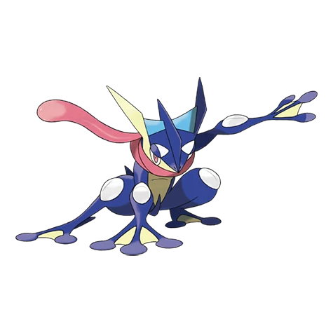
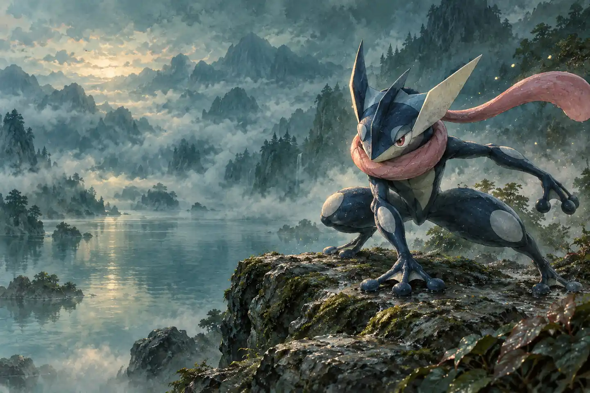
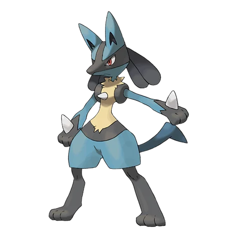
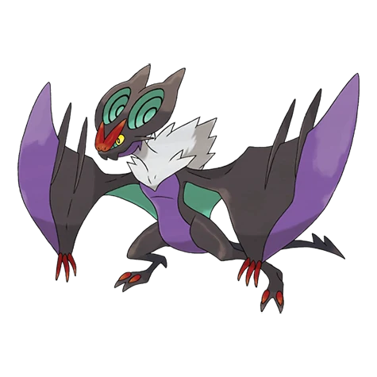
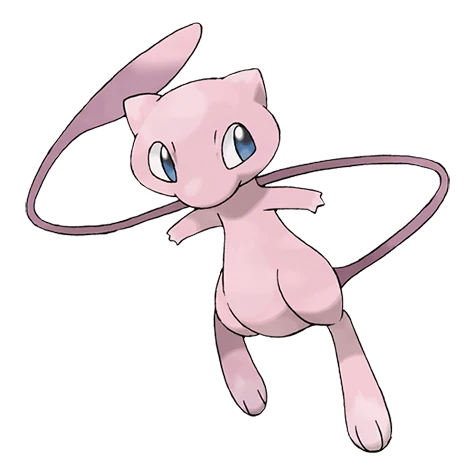

№ 658GEN 6

greninja
Грениндзя
ВодныйТёмный

Необязательно знать их всех.
Достаточно однажды встретить того,
с кем захочется продолжить путь.
Небольшая подборка.
Большой мир за её пределами.




Полевой сканер — маленький объект из нашего вымышленного мира. Покрути его, останови, рассмотри детали. Если 3D недоступно, останется обычная иллюстрация.
Как устроен атласПочему Грениндзя стал лицом нашей станции
Читать запись · сохраненоНойбат, Нойверн и длинная дорога между ними
Читать запись · сохраненоЛукарио: собранность в каждой линии
Читать запись · сохранено